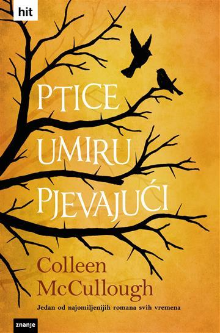
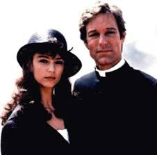
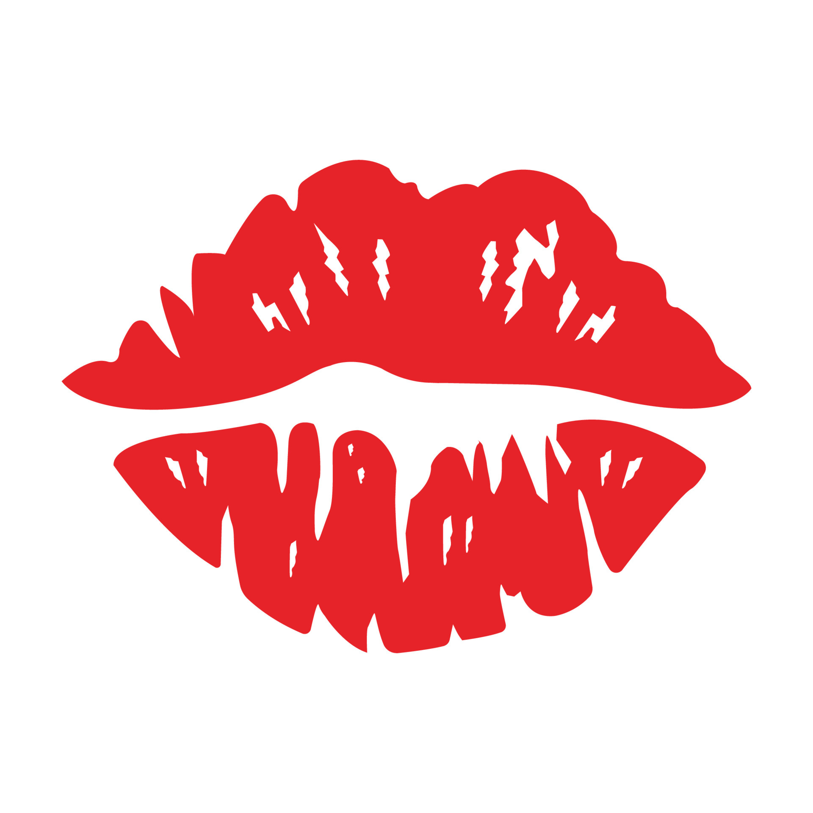

Dobrodošli na naš blog posvećen fascinantnom svijetu knjige "Ptice Umiru Pjevajući"! Ovdje smo kako bismo s vama podijelili dublji uvid, analize i emocije vezane uz ovu izvanrednu literarnu kreaciju.
Naša strast prema knjigama, a posebno prema "Ptice Umiru Pjevajući", potaknula nas je da stvorimo ovo virtualno mjesto gdje ljubitelji književnosti mogu pronaći inspiraciju, razmjenu misli i produbiti svoje razumijevanje ove nevjerojatne pustolovine iz pera talentiranog autora.
Mi smo skupina zaljubljenika u knjige koja se sastoji od strastvenih čitatelja, entuzijastičnih književnih analitičara i kreativaca koji su se udružili s jednim ciljem - istražiti svaki aspekt "Ptica Umiru Pjevajući". Naša zajednica obuhvaća raznolike perspektive i doživljaje, pružajući vam širok spektar pogleda na ovu izvanrednu književnu avanturu.
Naš blog nudi mnoštvo sadržaja, uključujući recenzije, analize likova, dublje tumačenje ključnih tema i mnogo više. Želimo stvoriti prostor gdje možete dijeliti svoje misli, postavljati pitanja i povezivati se s drugim ljubiteljima "Ptica Umiru Pjevajući". Bez obzira jeste li prvi put čuli za ovu knjigu ili ste već zaljubljeni u njezin svijet, imamo nešto za svakoga.U srcu naše stranice leži posvećenost promicanju ljubavi prema književnosti i poticanje dubokih, smislenih razgovora o knjigama koje nas inspiriraju. Naša misija je stvoriti prostor gdje ljubitelji književnosti mogu zajedno istraživati, raspravljati i dijeliti svoju strast prema "Pticama Umiru Pjevajući".
Naš tim sastoji se od stručnjaka u području književnosti, kreativaca i entuzijasta koji dijele ljubav prema pisanju. Svaki od nas doprinosi raznolikim perspektivama i vještinama kako bismo stvorili dinamično okruženje koje potiče na razmišljanje.
Ponosno surađujemo s istomišljenicima, autorima i književnim entuzijastima kako bismo proširili horizonte razumijevanja književnosti. Naši partneri doprinose raznolikošću sadržaja i donose nove perspektive, čineći našu zajednicu još bogatijom.
Hvala vam što ste s nama na ovoj književnoj avanturi "Ptica Umiru Pjevajući". Veselimo se zajedničkom istraživanju svih čarolija koje ova knjiga donosi!
S ljubavlju, tim bloga "Ptice Umiru Pjevajući"
